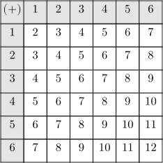
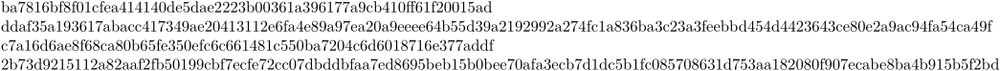

Contents
Calling Lua from TeX
The interweaving of ConTeXt and Lua consists of two elements: first you tell TeX that you're starting some Lua code; then, once inside Lua, you need to use the appropriate functions to put things into the TeX stream.
There are two main ways to execute Lua code in a ConTeXt document: The command \ctxlua, and the environment \startluacode…\stopluacode. Both are wrappers around the LuaTeX primitive \directlua, which you should never need to use. In general, you will define a function inside a \startluacode block, and then define a TeX command that calls the function using {{cmd|ctxlua, especially because \ctxlua has a few idiosyncracies.
The main thing about Lua code in a TeX document is this: the code is expanded by TeX before Lua gets to it. This means that all the Lua code, even the comments, must be valid TeX! A string like \undefined will cause an immediate failure.
Calling a bit of Lua inline: \ctxlua
The command \ctxlua is for short inline snippets of Lua, such as
$2 + 5 \neq \ctxlua{context(3+5)}$, but is equal to \ctxlua{context(2+5)}. This is \ctxlua{context(string.upper("absolutely"))} true.
\ctxlua operates under the normal TeX catcodes (category codes). This means the following two things for the Lua code inside:
- all newlines get treated as spaces
- special TeX characters like &, #, $, {, }, etc., need to be escaped.
In addition, the warning above still holds. All the Lua code, even the comments, must be valid TeX.
Some code to illustrate the newline problem:
\ctxlua {-- A Lua comment tex.print("This is not printed")} \ctxlua {% A Tex comment tex.print("This is printed")}
The problem with special TeX characters. (#t is Lua for 'the length of array t.)
% This doesn't work: %\ctxlua % {local t = {1,2,3,4} % tex.print("length " .. #t)} \ctxlua {local t = {1,2,3,4} tex.print("length " .. \string#t)}
Calling a lua function with \cldcontext and get the return
One can execute a Lua code from within TeX and get back the result in TeX by using \cldcontext. Thus, if myfunction is a function of a variable x defined in Lua, \cldcontext{myfunction(5)} returns the value myfunction(5) in TeX. This is equivalent to \ctxlua{context(myfunction(5))}.
A larger Lua block: \startluacode … \stopluacode
Inside the \startluacode…\stopluacode environment, newlines and special characters behave normally. This solves the catcode problem that \ctxlua suffers from. Apart from these special characters, the main warning remains in force: all the Lua code, even the comments, must be valid TeX.
\startluacode -- The unknown command \undefined will cause this entire block to fail. -- Print a countdown '10, 8, …, 0!' -- `..` is Lua for string concatenation for i = 10, 2, -2 do context(i .. ", ") end context("0!") -- \\par is equivalent to a blank line in the input -- (Notice the escaped backslash: TeX won't mind the above comment.) context.par() -- Look! we can use # and $ with impunity! context("Unless we print them, then we must \\#\\$\\& print the escape characters, too.") \stopluacode
Putting Lua code in an external file
You can put your lua code in an external file (with the .lua extension) and include it with the require command:
\startluacode -- include the file my-lua-lib.lua require("my-lua-lib") \stopluacode
Namespaces
It is a good habit to put your custom-defined functions in their own namespace. The traditional namespace for this is userdata:
\startluacode -- if userdata doesn't exist yet, create it userdata = userdata or {} -- define a shorter synonym u = userdata -- create my custom function inside the userdata namespace function u.myfunction() -- do stuff end \stopluacode
The full list of canonical namespaces, taken from luat-ini.lmt:
userdata = userdata or { } -- for users (e.g. functions etc)
thirddata = thirddata or { } -- only for third party modules
moduledata = moduledata or { } -- only for development team
documentdata = documentdata or { } -- for users (e.g. raw data)
parametersets = parametersets or { } -- experimental for team
If your module, environment, or document is going to be used by other people, you should create your own subnamespaces within these tables.
moduledata['mymodule'] = { }
mm = moduledata.mymodule
function mm.mainfunction()
-- do stuff
end
Undefined Commands in Lua Comments
Lua code invoked inside TeX doesn’t allow TeX undefined commands even inside comments.
\starttext \startluacode --\undefinedcommandfromme \stopluacode Hello \ctxlua{--\undefinedcommandfromme} \stoptext
To get the sample above working (as explained by Hans in a NTG-context thread from jan. 2023 entitled “Minor bug in Lua or ConTeXt”), you would need a fallback definition:
\ifdefined\undefinedcommandfromme \else \let\undefinedcommandfromme\relax \fi
\undefinedcommandfromme gets only defined (as \relax, to do nothing), if and only if it is undefined.
Calling TeX from Lua
Being a topic on itself, pages are dedicated:
- ConTeXt Lua Documents , or CLD, are way to access TeX from inside Lua scripts. A page give clues about passing variables within CLD (2018).
- Extensions to the Lua IO library
Putting stuff in your TeX document from Lua
Simple printing: context(), tex.print(), and tex.sprint()
Use context(…) for most things. It is equivalent to tex.print(string.format(…)), so
\startluacode name = "Jane" date = "today" context("Hello %s, how are you %s?", name, date) -- Becomes 'Hello Jane, how are you today?' \stopluacode
More primitively, you have tex.print() and tex.sprint(). Either one can take as an argument either a number of strings, or an array of strings, and will then insert the strings into the TeX stream. The only difference is that tex.print() treats each string as a separate input line, while tex.sprint() doesn't. So the following lines
\ctxlua{tex.print("a", "b")} \ctxlua{tex.print({"a", "b"})}
are both interpreted by TeX as
a b
but when we use tex.sprint instead, either of the following
\ctxlua{tex.sprint("a", "b")} \ctxlua{tex.sprint({"a", "b"})}
will be read by TeX as
ab
without any space in between.
Context commands
Most commands that you would type with a backslash in plain ConTeXt, you can access from Lua with context.command. Unadorned strings end up in TeX as arguments in curly braces; Lua tables end up in TeX as paramater blocks in square brackets. The following two pieces of code are equivalent:
\startluacode context.chapter({first}, "Some title") context.startcolumns({n = 3, rule = "on"}) context("Hello one") context.column() context("Hello two") context.column() context("Hello three") context.stopcolumns() \stopluacode
\chapter[first]{Some title} \startcolumns[n=3, rule=on] Hello one \column Hello two \column Hello three \stopcolumns
For a fuller account of the context.commands, see the ConTeXt Lua document manual. It is old, but most of it still applies.
One final note: arguments can also be specified in the form of nested functions. Because LuaTeX evaluates the deepest-nested argument first, this may cause the context() calls to be evaluated in the wrong order. For more on this, see the article on ConTeXt Lua documents, and also, again, the CLD manual.
Passing arguments and buffers: ConTeXt commands that hook into Lua
Making \command{arg1}{arg2} hook into Lua
First, define a Lua function:
\startluacode -- remember, using the userdata namespace prevents conflicts userdata = userdata or {} function userdata.surroundwithdashes(str) context("--" .. str .. "--") end \stopluacode
Then define the TeX command that expands to a \ctxlua call:
\def\surroundwd#1% {\ctxlua{userdata.surroundwithdashes([==[#1]==])}}
NB: quoting with [==[#1]==]
(long strings)
works just like "#1" in most cases, but in addition
it is robust against #1 containing the quotation mark
" which would terminate the Lua string prematurely.
Inside \protect…\unprotect the macros \!!bs
and {{cmd|!!es} are at your disposition.
They are equivalent to [===[ and ]===] and --
being single tokens to TeX -- parsed faster.
(See luat-ini.mkiv.)
Making \startenv … \stopenv hook into Lua
The first job is, as ever, to have the Lua function at the ready
\startluacode userdata = userdata or {} function userdata.verynarrow(buffer) -- equivalent to \startnarrower[10em] context.startnarrower({"10em"}) context(buffer) context.stopnarrower() end \stopluacode
Next, we define the start command of our custom buffer:
\def\startverynarrow% {\dostartbuffer [verynarrow] % buffer name [startverynarrow] % command where buffer starts [stopverynarrow]} % command where buffer ends % also: command invoked when buffer stops
Lastly, we define the \stopverynarrow command such that it passes the recently-complated buffer to our verynarrow Lua function:
\def\stopverynarrow {\ctxlua {userdata.verynarrow(buffers.getcontent('verynarrow'))}}
And that's it! The rest of this article will consist of examples.
Examples
Arithmetic without using an abacus
This example demonstrates writing simple commands that invoke \ctxlua.
Doing simple arithmetic in TeX can be extremely difficult. With Lua, simple arithmetic becomes trivial. For example, if you want a macro to find the cosine of an angle (in degrees), you can write
\def\COSINE#1% {\ctxlua{context(math.cos(#1*2*math.pi/360))}}
The built-in math.cos function assumes that the argument is specified in radians, so we convert from degrees to radians on the fly. If you want to type the value of $\pi$ in an article, you can simply say
$\pi = \ctxlua{context(math.pi)}$
or, if you want less precision:
$\pi = \ctxlua{context("\letterpercent.6f", math.pi)}$
Notice that the percent sign is escaped with letterpercent.
mathexpr with LMTX
In LMTX there is a new way to use calculated expressions with mathexpr through (math-fun).
Some examples are:
$ \pi = \mathexpr[.40N]{pi} $ $ \pi = \mathexpr[.80N]{sqrt(11)} $ $ \pi = \decimalexpr[.80N]{sqrt(11)} $ $ \pi = \decimalexpr{sqrt(11)} $ $ c = \complexexpr{123 + new(456,789)} $
Loops without worrying about expansion
This example demonstrates using Lua to write a quasi-repetitive piece of ConTeXt code.
Loops in TeX are tricky, because macro assignments and macro expansion interact in strange ways. For example, suppose we want to typeset a table showing the sum of the roll of two dice and want the output to look like this:
-
\setupcolors[state=start] \setupTABLE[each][each][width=2em,height=2em,align={middle,middle}] \setupTABLE[r][1][background=color,backgroundcolor=gray] \setupTABLE[c][1][background=color,backgroundcolor=gray] \bTABLE \bTR \bTD $(+)$ \eTD \bTD 1 \eTD \bTD 2 \eTD \bTD 3 \eTD \bTD 4 \eTD \bTD 5 \eTD \bTD 6 \eTD \eTR \bTR \bTD 1 \eTD \bTD 2 \eTD \bTD 3 \eTD \bTD 4 \eTD \bTD 5 \eTD \bTD 6 \eTD \bTD 7 \eTD \eTR \bTR \bTD 2 \eTD \bTD 3 \eTD \bTD 4 \eTD \bTD 5 \eTD \bTD 6 \eTD \bTD 7 \eTD \bTD 8 \eTD \eTR \bTR \bTD 3 \eTD \bTD 4 \eTD \bTD 5 \eTD \bTD 6 \eTD \bTD 7 \eTD \bTD 8 \eTD \bTD 9 \eTD \eTR \bTR \bTD 4 \eTD \bTD 5 \eTD \bTD 6 \eTD \bTD 7 \eTD \bTD 8 \eTD \bTD 9 \eTD \bTD 10 \eTD \eTR \bTR \bTD 5 \eTD \bTD 6 \eTD \bTD 7 \eTD \bTD 8 \eTD \bTD 9 \eTD \bTD 10 \eTD \bTD 11 \eTD \eTR \bTR \bTD 6 \eTD \bTD 7 \eTD \bTD 8 \eTD \bTD 9 \eTD \bTD 10 \eTD \bTD 11 \eTD \bTD 12 \eTD \eTR \eTABLE
- 
This is easy in LuaTeX. Once a Lua instance starts, TeX does not see anything until the Lua instance exits. So, we can write the loop in Lua, and simply print the values that we would have typed to the TeX stream. When the control is passed to TeX, TeX sees the input as if we had typed it by hand. This is the Lua code for the above table:
\setupcolors[state=start] \setupTABLE[each][each][width=2em,height=2em,align={middle,middle}] \setupTABLE[r][1][background=color,backgroundcolor=gray] \setupTABLE[c][1][background=color,backgroundcolor=gray] \startluacode context.bTABLE() context.bTR() context.bTD() context("$(+)$") context.eTD() for j=1,6 do context.bTD() context(j) context.eTD() end context.eTR() for i=1,6 do context.bTR() context.bTD() context(i) context.eTD() for j=1,6 do context.bTD() context(i+j) context.eTD() end context.eTR() end context.eTABLE() \stopluacode
Parsing input without exploding your head
This example demonstrates parsing simple ASCII notation with Lua's lpeg parser.
As an example, let's consider typesetting chemical molecules in TeX. Normally, molecules should be typeset in text mode rather than math mode. If we want
- H 3 SO 4 + ,
we must type
but we'd much rather type
- \molecule {H_3SO_4^+ }.
So, we need a function that can take a string like that, parse it, and turn it into the appropriate TeX code. LuaTeX includes a general parser based on PEG (parsing expression grammar) called lpeg, and it makes writing little parsers positively joyful. (Once you've got the knack of it, at least.) For example, the above \molecule macro can be written as follows.
\startluacode -- we will put our molecule function in the userdata namespace. userdata = userdata or { } -- The formatting functions into which the captured -- superscript/subscript blocks will be fed local formatters = { } function formatters.low(one) return string.format("\\low{%s}", one) end function formatters.high(one) return string.format("\\high{%s}", one) end function formatters.lowhigh(one, two) return string.format("\\lohi{%s}{%s}", one, two) end function formatters.highlow(one, two,three) return string.format("\\lohi{%s}{%s}", one,two) end -- These are the characters we may encounter -- The `/` means we want to expand + and - to \textplus c.q. \textminus; -- this substition is not instant, but will take place inside the first -- surrounding lpeg.Cs() call. local plus = lpeg.P("+") / "\\textplus " local minus = lpeg.P("-") / "\\textminus " local character = lpeg.R("az", "AZ", "09") -- R is for 'range' local subscript = lpeg.P("_") -- P is simply for 'pattern' local superscript = lpeg.P("^") local leftbrace = lpeg.P("{") local rightbrace = lpeg.P("}") -- a ^ or _ affects either a single character, or a brace-delimited -- block. Whichever it is, call it `content`. local single = character + plus + minus local multiple = leftbrace * single^1 * rightbrace local content = single + multiple -- These are our top-level elements: non-special text, of course, and -- blocks of superscript/subscript/both. -- lpeg.Cs(content) does two things: -- (1) not all matches go into the `/ function` construction; only -- *captures* go in. The C in Cs stands for Capture. This way, -- the superscript/subscript mark gets discarded. -- (2) it expands plus/minus before they go into the formatter. The -- s in Cs stands for 'substitute in the replacement values, if any' local text = single^1 local low = subscript * lpeg.Cs(content) / formatters.low local high = superscript * lpeg.Cs(content) / formatters.high local lowhigh = subscript * lpeg.Cs(content) * superscript * lpeg.Cs(content) / formatters.lowhigh local highlow = superscript * lpeg.Cs(content) * subscript * lpeg.Cs(content) / formatters.highlow -- Finally, the root element: 'moleculepattern' local moleculepattern = lpeg.Cs((lowhigh + highlow + low + high + text)^0) function thirddata.molecule(string) -- * `:match` returns the matched string. Our pattern -- `moleculepattern` should match the entire input string. Any -- *performed* substitutions are retained. (`.Cs()` performs a -- previously defined substitution.) -- * `context()` inserts the resulting string into the stream, ready for -- TeX to evaluate. context(moleculepattern:match(string)) end \stopluacode \def\molecule#1{\ctxlua{thirddata.molecule("#1")}} \starttext \molecule{Hg^+}, \molecule{SO_4^{2-}} \stoptext
Quite terse and readable by parser standards, isn't it?
Manipulating verbatim text
This example demonstrates defining a custom \start…\stop buffer that gets processed through Lua in its entirety.
Suppose we want to write an environment \startdedentedtyping … \stopdedentedtyping that removes the indentation of the first line from every line. Thus, the output of …
\startdedentedtyping #include <stdio.h> void main() { print("Hello world \n") ; } \stopdedentedtyping
… should be the same as the output of …
\starttyping #include <stdio.h> void main() { print("Hello world \n") ; } \stoptyping
… even though the leading whitespace is different.
Defining an environment in TeX that removes the leading spaces but leaves other spaces untouched is complicated. On the other hand, once we capture the contents of the environment, removing the leading indent or dedenting the content in Lua is easy. Here is a Lua function that uses simple string substitutions.
\startluacode -- Initialize a userdata name space to keep our own functions in. -- That way, we won't interfere with anything ConTeXt keeps in -- the global name space. userdata = userdata or {} function userdata.dedentedtyping(content) local lines = string.splitlines(content) local indent = string.match(lines[1], '^ +') or '' local pattern = '^' .. indent for i=1,#lines do lines[i] = string.gsub(lines[i],pattern,"") end content = table.concat(lines,'\n') tex.sprint("\\starttyping\n" .. content .. "\\stoptyping\n") -- The typing environment looks for an explicit \type{\stoptyping}. So, -- context.starttyping() context(content) context.stoptyping() -- does not work. But -- context.starttyping() context(content) tex.sprint("\\stoptyping") -- does. end \stopluacode
Here is the code for defining the \startdedentedtyping … \stopdedentedtyping pair:
% Create an environment that stores everything % between \startdedentedtyping and \stopdedentedtyping % in a buffer named 'dedentedtyping'. \def\startdedentedtyping {\dostartbuffer [dedentedtyping] [startdedentedtyping] [stopdedentedtyping]} % On closing the dedentedtyping environment, call the LuaTeX % function dedentedtyping(), and pass it the contents of % the buffer called 'dedentedtyping' \def\stopdedentedtyping {\ctxlua {userdata.dedentedtyping(buffers.getcontent('dedentedtyping'))}}
That's all. Finally, we will go into a little more detail on how TeX and Lua communicate with each other.
Generate SHA for text and external files
From Ousia, August 2022
ConTeXt needs no external programs to generate SHA for text and external files:
-
\ctxlua{require("util-sha")} \def\shatwo#1{% \cldcontext{utilities.sha2.hash256("#1")}} \def\shafive#1{% \cldcontext{utilities.sha2.hash512("#1")}} \def\shatwofile#1{% \cldcontext{utilities.sha2.hash256(io.loaddata("#1"))}} \def\shafivefile#1{% \cldcontext{utilities.sha2.hash512(io.loaddata("#1"))}} \def\testtext{abc} \def\testfile{\jobname.tex} \shatwo{\testtext}\\ \shafive{\testtext} \shatwofile{\testfile}\\ \shafivefile{\testfile}
- 
It may be even used when embedding external files with \attachment.
Other examples
- Writing a parser with LPeg (Lua Parsing Expression Grammars)
- Random numbers in ConTeXt and MetaPost
- An example with SQL database
- Pascal's triangle
In detail: the interaction between TeX and Lua
To a first approximation, the interaction between TeX and Lua is straightforward. When TeX (i.e., the LuaTeX engine) starts, it loads the input file in memory and processes it token by token. When TeX encounters \directlua, it stops reading the file in memory, fully expands the argument of \directlua, and passes the control to a Lua instance. The Lua instance, which runs with a few preloaded libraries, processes the expanded arguments of \directlua. This Lua instance has a special output stream which can be accessed using tex.print(…). The function tex.print(…) is just like the Lua function print(…) except that tex.print(…) prints to a TeX stream rather than to the standard output. When the Lua instance finishes processing its input, it passes the contents of the TeX stream back to TeX.[1] TeX then inserts the contents of the TeX stream at the current location of the file that it was reading; expands the contents of the TeX stream; and continues. If TeX encounters another \directlua, the above process is repeated.
As an exercise, imagine what happens when the following input is processed by LuaTeX. The answer is in the footnotes. [2]
\directlua% {tex.print("Depth 1 \\directlua{tex.print('Depth 2')}")}
For more on this, see the [1] article on the LuaTeX wiki.
Notes
-
↑
The output of
tex.print(…)is buffered and not passed to TeX until the Lua instance has stopped. - ↑ In this example, two different kinds of quotations are used to avoid escaping quotes. Escaping quotes inside \directlua is tricky. The above was a contrived example; if you ever need to escape quotes, you can use the \startluacode … \stopluacode syntax.
| NOTE: This article is originally based on this TugBoat article . Feel free to modify it. |